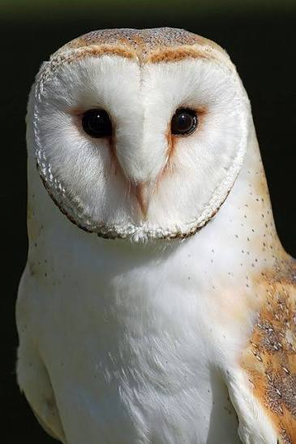

| Espécie | Tyto Furcata |
|---|---|
| Reino | Animalia |
| Filo | Chordata |
| Classe | Aves |
| Ordem | Strigiformes |
| Família | Tytonidae |
| Sexo | Indeterminado |
| Idade | Indeterminado |
A coruja-suindara (Tyto furcata), também conhecida como coruja-das-torres ou rasga-mortalha, é uma ave de rapina que possui aproximadamente 35 cm de comprimento, penas predominantemente brancas e amarronzadas e um rosto característico em formato de coração.
Sua alimentação é carnívora, composta principalmente por pequenos roedores, como ratos e camundongos, mas também inclui insetos, morcegos, anfíbios, répteis e pequenas aves.
Possui ampla distribuição geográfica, sendo encontrada em praticamente todo o continente americano, desde o sul do Canadá, passando pela América Central e por diversas regiões da América do Sul, até a Argentina e o Chile.
No Brasil, está presente em todas as regiões, ocupando diferentes ambientes, como áreas rurais, campos abertos, regiões de vegetação natural e ambientes urbanos.
Seus predadores naturais incluem grandes aves de rapina, outras corujas e serpentes, que podem atacar principalmente seus ovos e filhotes.
Apresenta hábitos predominantemente noturnos, descansando durante o dia em locais protegidos, como cavernas, galpões, sótãos e torres de igrejas.
Sua audição extremamente desenvolvida permite localizar presas mesmo na escuridão, enquanto suas penas especiais possibilitam um voo silencioso.
Além disso, desempenha um importante papel ecológico no controle natural de roedores.
Desafio de Articulação de Competências dirigido pelo primeiro semestre da Medicina Veterinária.
Professora Orientadora:Rosalia Marina Infiesta Zulim.
Acadêmicos:
Luisa Tomi Arazawa Macedo
Bianca Souza Higa
Brendha Agnes Simeoni Dutra
Kahenna Araújo Rossato
Kyara Rodrigues Colette
Érica Aparecida Dos Santos
Djeini Louise Do Prado
Coruja Suindara - Todos os direitos reservados.©